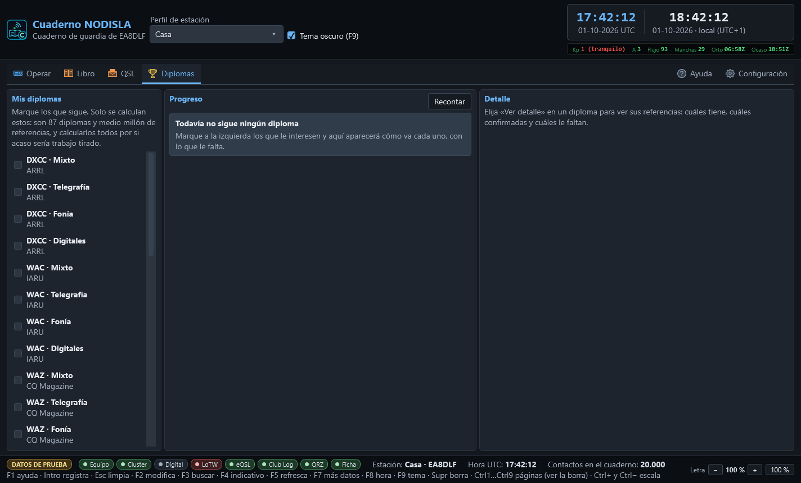

Diplomas
La entrada Diplomas de la barra (Ctrl 5) sigue los diplomas que se van consiguiendo. Para diseñar e imprimir diplomas propios o el certificado de uno conseguido está QSL › Diplomas.
La pantalla tiene tres bloques: a la izquierda el catálogo para elegir los propios, en el centro cómo van los que se siguen, y a la derecha el detalle de uno — qué referencias tiene, cuáles confirmadas y cuáles faltan.


Elegir qué diplomas seguir
El catálogo trae 87 diplomas — DXCC, WAS, WAZ, WAC, WPX, IOTA, SOTA, POTA, WWFF y muchos más — con medio millón de referencias entre todos. Marcando la casilla de uno se empieza a seguir; solo se calculan los marcados, porque recalcular los ochenta y siete por si acaso sería trabajo tirado sobre esa cantidad de referencias. Por eso, sin ninguno elegido, la pantalla invita a marcar en vez de fingir que está calculando algo.
Qué son NEW, BAND y MODE
Cuando se elige un diploma que se calcula por país — como el DXCC — el progreso distingue tres formas de que una entidad cuente:
- NEW (nuevo) — la entidad no está en absoluto en el cuaderno con ese diploma.
- BAND — la entidad ya está trabajada, pero no en esa banda concreta.
- MODE — la entidad ya está trabajada, pero no en ese modo concreto.
Es la misma idea que la matriz de novedad de Operar › Cabina: no basta con haber trabajado un país una vez, hace falta trabajarlo (y a veces confirmarlo) en cada banda y en cada modo para que cuente en según qué diploma.
Las vías de confirmación
Un contacto puede estar trabajado pero no confirmado, y un diploma solo se concede con confirmaciones de verdad. Las vías que sigue el cuaderno son las mismas cuatro que en el resto del programa: papel, eQSL, LoTW y QRZ. El botón «Ver detalle» de cada diploma abre a la derecha la lista completa de sus referencias, con tres estados posibles por cada una: falta (sin trabajar), sin QSL (trabajada pero no confirmada) y confirmada. El estado va siempre escrito además de en color, para quien no distinga bien los colores.
Los diplomas grandes — SOTA pasa de 182.000 referencias — se enseñan paginados, con los botones ◀ y ▶ debajo de la lista.
Cuándo una cifra no es firme
Junto a algunos progresos aparece un aviso ámbar: «La cifra es un mínimo, no la definitiva». Pasa con los diplomas que su propio gestor valida contra una base externa, o que cuentan por campos que este cuaderno todavía no guarda: en esos casos la cifra que se enseña es una cota inferior, nunca una cifra de más. El aviso va siempre junto al número, no escondido en una ayuda emergente — enseñar la cifra sin decirlo llevaría a pedir un diploma que en realidad no se tiene, o a no pedir uno que sí.
El botón «Recontar» vuelve a calcular el progreso de los diplomas elegidos, por si se ha importado o editado el cuaderno desde la última vez.